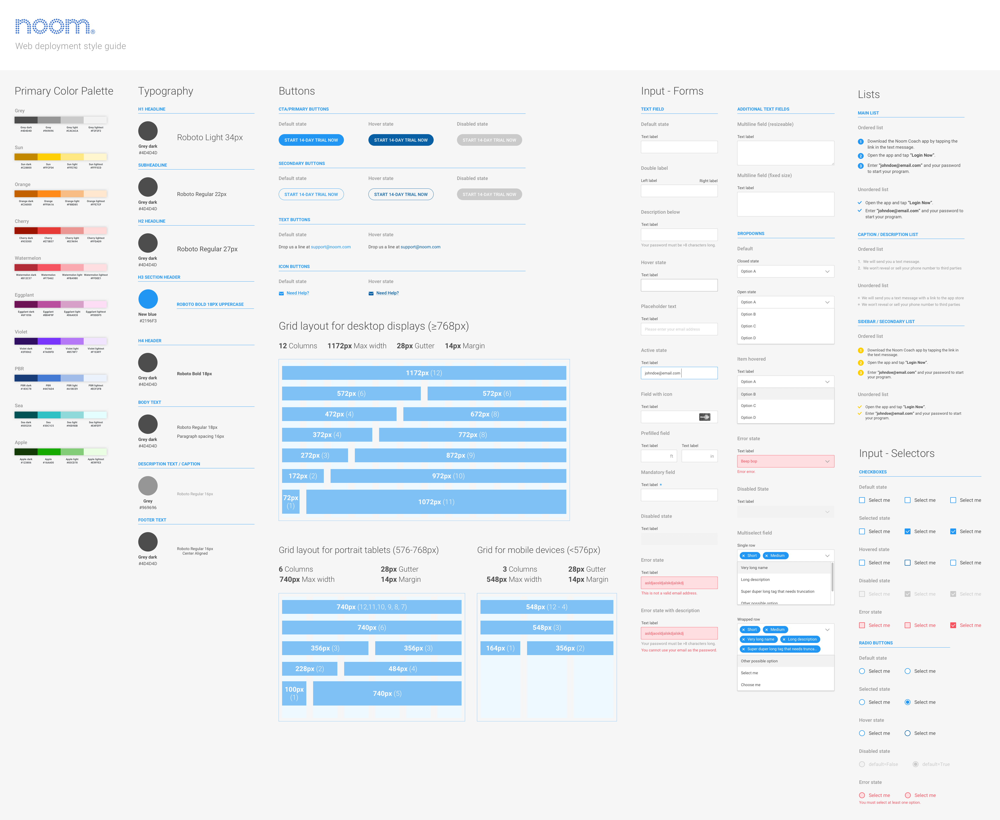

Core objectives
- Creating a product that provides the player with a pleasant and intuitive experience.
- Designing with accordance to budget and timeline constraints.
- Designing systems that are compatible with past builds and in accordance with game design specifications, while keeping scalability in mind.
- Designing the product with the end user’s satisfaction and needs as the primary motivation.

A typical Friday at Uken.
The story
I began my work term at Uken Games' CloudBreakers team at the beginning of 2016, a team of 15 people in a company of 80 employees. The team consisted of members of all disciplines; products, design, management, and engineers.
When I first joined the team, the game was close to its end of Q1 Alpha release. A core part of why this was an invaluable experience for me was because I had to opportunity to engage in user research and behavior analysis in depth for the first time in my career.
Working at the studio requires you to quickly and elegantly deliver animated and static mocks which illustrate player behavior and interactions with the game. My mentor was instrumental in ensuring that I was exposed to different opportunities and design challenges.
When I first joined the team, the game was close to its end of Q1 Alpha release. A core part of why this was an invaluable experience for me was because I had to opportunity to engage in user research and behavior analysis in depth for the first time in my career.
Working at the studio requires you to quickly and elegantly deliver animated and static mocks which illustrate player behavior and interactions with the game. My mentor was instrumental in ensuring that I was exposed to different opportunities and design challenges.
Finding the solution
Over the span of my 4 month work term on CloudBreakers, I took ownership of and completed over 40 tasks large and small. This consisted of major overhauls or brand new designs of 6 major in-game systems (Garage/Crafting, Dossier, Chat, Settings, Profile/Friends, and Mission Briefing), and 12 animated prototypes.
The overhauls and designs usually involved a series of steps:
Part of the process for collaborative design is for UX designers to work synergetically with producers, game designers, and developers. A big part of this was thanks to a streamlined workflow.
A large part of the streamlining involved laying groundworks such as establishing style guides and an UI library in both Adobe CC and Sketch.
Flinto and Zeplin were used to do the heavy lifting, these tools vastly improve the speed at which the team was able to complete and collaborate on tasks. Flinto allowed us to quickly build out interactive (90% functional) prototypes extremely quickly, with full featured workflows and animations. Zeplin streamlined the transition from design to engineering by turning mockups into interactive design specs, enabling developers to generate assets and style code directly.
 Here's a couple of animations and mocks that I worked on in the past four month, with images illustrating the process.
Here's a couple of animations and mocks that I worked on in the past four month, with images illustrating the process.
Step 1. Working with game design to establish a logical flow for the different game components.
Step 2. Establish the flow, and then have lots and lots of brainstorm sessions.
 Step 3. Explore and eliminate ideas through the creation of low to mid fidelity mocks.
Step 3. Explore and eliminate ideas through the creation of low to mid fidelity mocks.
 Step 4. Select the "best" solution candidate from the pool of low fidelity mocks, produce the high fidelity mock. Provide sound reasons to defend the design when challenged.
Step 4. Select the "best" solution candidate from the pool of low fidelity mocks, produce the high fidelity mock. Provide sound reasons to defend the design when challenged.

Step 5. User test the final products, and iterate! Rinse and repeat.
The overhauls and designs usually involved a series of steps:
- Identifying the problem: What exactly are we trying to solve?
- Researching existing solutions: How did other studios/design teams solve similar problems before?
- Identifying constraints: Will the existing resources allow for the overhauled specs?
- Prototyping: Let's build it out and get more hands-on with the design!
- Iterating the solution: What is not working, and how do we go about fixing it?
Part of the process for collaborative design is for UX designers to work synergetically with producers, game designers, and developers. A big part of this was thanks to a streamlined workflow.
A large part of the streamlining involved laying groundworks such as establishing style guides and an UI library in both Adobe CC and Sketch.
Flinto and Zeplin were used to do the heavy lifting, these tools vastly improve the speed at which the team was able to complete and collaborate on tasks. Flinto allowed us to quickly build out interactive (90% functional) prototypes extremely quickly, with full featured workflows and animations. Zeplin streamlined the transition from design to engineering by turning mockups into interactive design specs, enabling developers to generate assets and style code directly.
In this case Zeplin helps bridge the gap between developers and designers. Fully automating the hand-off process.
Step 1. Working with game design to establish a logical flow for the different game components.
The enormous documented PvE ecosystem.
Countless ideas were born in this room...but not all of which survive.
From sketches on paper to sketches on Sketch 3™.
TL: Overworld Nameplate. TR: Dossier Overview Interface. BL: Player Profile Arena Information. BR: Crafting Interface.
Sample animation proof of concept for the evolution cinematics.
Design challenges
One of the core concepts of UX design requires the system designed to be as intuitive as possible, with minimal thinking required on the user’s part when navigating through the interface and interactions.
Keeping these core ideas in mind, the designs needed to be simple to use, simple in implementation, potentially scalable and also delivered in a timely fashion due to the pressing budget and timeline.
On a few occasions, the game design and UX design team would come into disagreement with the direction or the implementation of certain features.
Under these circumstances what usually ended up happening were collaborative brainstorm sessions. The teams would dissect the problem at its roots, and the points of discussion usually revolved around why a specification or implementation is necessary and whether it will bring value to the end users.
In some ways UX and game designers are almost like fire and ice — game design usually wants complex game mechanics that increases the amount of meaningful decisions the players are able to make (the more stats the better, the more options the better); whereas UX designers work with the fundamental principle of reducing cognitive load by simplifying game experiences.
One major issue that I often ran into was the consideration for the scope of designs. Often times the designed systems are rendered obsolete by existing specs, and major audits are needed. The challenge in these situations would be to always consider the timeline, and finding a solution that is optimized for UX, game design, and development resources. Sometimes this would mean settling for a "budgeted" design, but that's okay. Because sometimes the "best" UX solution is too expensive to implement. Finding the sweet spot in what works for all disciplines involved requires a delicate balance.
Keeping these core ideas in mind, the designs needed to be simple to use, simple in implementation, potentially scalable and also delivered in a timely fashion due to the pressing budget and timeline.
On a few occasions, the game design and UX design team would come into disagreement with the direction or the implementation of certain features.
Under these circumstances what usually ended up happening were collaborative brainstorm sessions. The teams would dissect the problem at its roots, and the points of discussion usually revolved around why a specification or implementation is necessary and whether it will bring value to the end users.
In some ways UX and game designers are almost like fire and ice — game design usually wants complex game mechanics that increases the amount of meaningful decisions the players are able to make (the more stats the better, the more options the better); whereas UX designers work with the fundamental principle of reducing cognitive load by simplifying game experiences.
One major issue that I often ran into was the consideration for the scope of designs. Often times the designed systems are rendered obsolete by existing specs, and major audits are needed. The challenge in these situations would be to always consider the timeline, and finding a solution that is optimized for UX, game design, and development resources. Sometimes this would mean settling for a "budgeted" design, but that's okay. Because sometimes the "best" UX solution is too expensive to implement. Finding the sweet spot in what works for all disciplines involved requires a delicate balance.
User testing
Luckily my work term coincided with the Alpha playtest of CloudBreakers. The UX team had concerns in some of the general game design and gameplay directions. But in order to make our arguments more concrete we required validation in the form of external user feedback.
The game had previously had a number of internal playtests, but the feedback received usually tends to be biased in a neutrally positive light (asking your friends and coworkers to critically and harshly evaluate your designs won't always prove to be the most productive, due to politics).
The UX team suggested that a closed beta would provide valuable user feedback for the studio. The playtest was designed in the form of a Longitudinal Diary user studies, and over 50 users participated in the playtest.
 TypeForm.com was used to produce the playtest diary questions, and we enlisted help from UserTesting.com for feedback in the form user-emotion and user-behaviour videos (along with gesture recordings).
TypeForm.com was used to produce the playtest diary questions, and we enlisted help from UserTesting.com for feedback in the form user-emotion and user-behaviour videos (along with gesture recordings).
I was also granted the opportunity to speak in person with some of our users. What was especially valuable for me in this experience was being able to digest and dissect their comments from both a logical and emotional standpoint.
 I won’t go into too much details into the results of the playtest, but I could say that it was immensely helpful in helping us consolidating the game and identifying what works and what needs adjustments.
I won’t go into too much details into the results of the playtest, but I could say that it was immensely helpful in helping us consolidating the game and identifying what works and what needs adjustments.
One major takeaway I learned from this exercise is the practice of empathy - putting myself in the user’s mindset and REALLY, I mean REALLY, understanding the user’s frustrations first-hand. A significant challenge I encountered during this exercise was to remove personal bias when reading into an user’s responses and behaviour. Stopping oneself from injecting their own narrative when analyzing the user feedback is especially important.
The game had previously had a number of internal playtests, but the feedback received usually tends to be biased in a neutrally positive light (asking your friends and coworkers to critically and harshly evaluate your designs won't always prove to be the most productive, due to politics).
The UX team suggested that a closed beta would provide valuable user feedback for the studio. The playtest was designed in the form of a Longitudinal Diary user studies, and over 50 users participated in the playtest.
The massive spreadsheet of all the gathered user feedback. Over 50 users participated, and over 170 responses were recorded.
I was also granted the opportunity to speak in person with some of our users. What was especially valuable for me in this experience was being able to digest and dissect their comments from both a logical and emotional standpoint.
We broke down the data so we could correlate commonalities between the participants before presenting the findings to the entire team.
One major takeaway I learned from this exercise is the practice of empathy - putting myself in the user’s mindset and REALLY, I mean REALLY, understanding the user’s frustrations first-hand. A significant challenge I encountered during this exercise was to remove personal bias when reading into an user’s responses and behaviour. Stopping oneself from injecting their own narrative when analyzing the user feedback is especially important.
The takeaway
After having been exposed to user testing and research methodologies in such intensity for the first time, I could confidently say that I'm much more comfortable designing and conducting user tests.
It was also interesting because this was my first time working with a games studio. Due to Uken's team structures, I learned that smaller game studios tend to operate in a way that's very similar to agile startups, and similar problems are always encountered. Despite the challenges and problems we faced, I could say that I'm definitely more interested in games development as a whole, and will be looking for opportunities to work with games studios in the future.
Big shoutouts to the CloudBreakers team for having so much faith in me! Especially to my mentor/good friend/supervisor Brian Lin, thank you for the advice you've gave me in all aspects of life. Whether it was over coffee, one-on-ones, or beer, there's always valuable to takeaway from our conversations.
Uken definitely was an amazing experience for me, tons of talented individuals. I'm definitely interested in how the company will develop moving forward.
It was also interesting because this was my first time working with a games studio. Due to Uken's team structures, I learned that smaller game studios tend to operate in a way that's very similar to agile startups, and similar problems are always encountered. Despite the challenges and problems we faced, I could say that I'm definitely more interested in games development as a whole, and will be looking for opportunities to work with games studios in the future.
Big shoutouts to the CloudBreakers team for having so much faith in me! Especially to my mentor/good friend/supervisor Brian Lin, thank you for the advice you've gave me in all aspects of life. Whether it was over coffee, one-on-ones, or beer, there's always valuable to takeaway from our conversations.
Uken definitely was an amazing experience for me, tons of talented individuals. I'm definitely interested in how the company will develop moving forward.
Tools used
- Vector graphics are edited using Adobe Illustrator
- High fidelity mocks done using Adobe Photoshop
- Low fidelity mocks done using Sketch
- Animations done in Adobe AfterEffects
- Prototyping done using Flinto
- Hand-off process performed in Zeplin

The Story
I had the opportunity to work with Roadmunk for the summer of 2015. Roadmunk is a highly talented and focused start-up based in downtown Toronto.
Roadmunk is an enterprise SaaS platform that enables product managers and their teams to communicate strategic roadmaps to shareholders and their organization. At its core, Roadmunk is a roadmap visualization web application.
I completed a variety of tasks for Roadmunk, from graphics, branding, web development, to product design. I was instrumental in ensuring the product’s success during the four months that I worked there.
Roadmunk is an enterprise SaaS platform that enables product managers and their teams to communicate strategic roadmaps to shareholders and their organization. At its core, Roadmunk is a roadmap visualization web application.
I completed a variety of tasks for Roadmunk, from graphics, branding, web development, to product design. I was instrumental in ensuring the product’s success during the four months that I worked there.

Application UX / Product Design
Roadmunk’s core mission objective was to deliver a pleasant user experience, and design for the path of least resistance. Users should get the job done with minimal conscious effort. All of Roadmunk's designs holds true to these three core philosophies.
Here are some features that I worked on during my time at Roadmunk.
3 Click Mentality
Trying to design so that every option is less than 3 clicks away. Hovers and drags count as half clicks. Keep track of the design and try to minimize the distance. The routes should be as direct as possible.Reducing Cognitive Load
Cognitive-load is the mental strain required at any given time to process what the information/accomplish tasks. The objective is to try to reduce it as much as we can, so we can give emphasis to the roadmap info users add.Tactful Transitions
Transitions are used throughout the app. Hover over any clickable div and see this effect. The rationale behind this was to make the user feel more in tune and have a pleasant feeling navigating around the app.Here are some features that I worked on during my time at Roadmunk.

Weekly planning allows product managers to create sprint-oriented roadmaps.

Reviewer mode allows users to share strategic roadmaps directly with stakeholders and other team members.

Roadmunk registration page was redesigned for a more modern feel.
Branding Strategy
The branding strategy makes use of a trio of upbeat and bright colors from the orange, blue and green palettes. These mature tones were used to strike a balance between Roadmunk’s roots in a technology start-up and the product’s purpose as an enterprise service platform.

Business cards made use of the classic Roadmunk orange for a vibrant entrepreneurial feel.

The Roadmunk documentation theme makes use of the different tones in the Roadmunk orange palette.
Website Redesign
Roadmunk has a keen focus on delivering a slick interface and user experience to its customers. The website needed to evolve to match this criteria. The redesign’s goal aimed for a new webpage that communicated the company’s core values and delighted its customers.
Friendly and upbeat colours are used throughout the website. View it live at roadmunk.com/features.
Friendly and upbeat colours are used throughout the website. View it live at roadmunk.com/features.

A brand new features page redesign after Reviewer mode and weekly planning functionalities were launched.
Tools Used
- Vector graphics and icons are created using Adobe Illustrator
- High fidelity mocks and graphics created using Adobe Photoshop
- Mockup process created using UXPin
- HTML/CSS for frontend development

LEGGO mobile app
The Story
LEGGO was founded in the Summer of 2015 by two of my good friends from UWaterloo. I was invited to join the team during the Autumn of 2015. The founders invited me to join the team as the product and design lead. I led a team of 6 other designers and engineers in developing the next major iteration of the application.
In its core, LEGGO is an event aggregation mobile platform designed for students, by students. The problem the application tried to solve is to help students find different sorts of social and community events, from parties to raves, from professional talks to campus recruiting events.
In its core, LEGGO is an event aggregation mobile platform designed for students, by students. The problem the application tried to solve is to help students find different sorts of social and community events, from parties to raves, from professional talks to campus recruiting events.
User Personas
Taking the lessons I learned during previous co-op terms into consideration, I set out to recreate the LEGGO application almost entirely from scratch.
After studying the responses of over 40 students from a user survey, I was able to create three major personas. These students are those who are frustrated with finding and organizing campus/extracurricular events.

After studying the responses of over 40 students from a user survey, I was able to create three major personas. These students are those who are frustrated with finding and organizing campus/extracurricular events.
The user personas of LEGGO.
Onboarding
A slick and clean UI greets the user the first time they enter the app. The interface is familiar and intuitive.

App UI&UX Design
The core design principle I had in mind while designing for LEGGO was to keep things clean and user friendly from a UI standpoint, and at the same time promoting social interaction between the users.


The core functionality for LEGGO is for users to bookmark, archive, and browse for events. In order to make it easy for users to search and find relevant events, a deliberate product decision was made to categorize events based on when they are happening - today, tomorrow, or in the future.


The core functionality for LEGGO is for users to bookmark, archive, and browse for events. In order to make it easy for users to search and find relevant events, a deliberate product decision was made to categorize events based on when they are happening - today, tomorrow, or in the future.
Landing Page Design
View the Site Live at leggoevent.com.

Tools Used
- Adobe Illustrator for vector & icon graphics
- Adobe Photoshop for high fidelity mock ups

The Story
I was fortunate enough to be chosen as the Product Design intern at Noom for the fall of 2016.
A company founded and based in NYC, Noom is a mobile app aimed to treat chronic and pre-chronic conditions through lifestyle change and behaviour change by pairing diagnosed patients with personal coaches.
During my short time at Noom, I was able to take ownership over a number of different projects, from "vector science", establishment of web and app interface guidelines, animation, to product design. It was a blast working with the residence design team.
A company founded and based in NYC, Noom is a mobile app aimed to treat chronic and pre-chronic conditions through lifestyle change and behaviour change by pairing diagnosed patients with personal coaches.
During my short time at Noom, I was able to take ownership over a number of different projects, from "vector science", establishment of web and app interface guidelines, animation, to product design. It was a blast working with the residence design team.
Welcome to the Noomily!
Design Challenges
Designing Noom's product was an interesting challenge because the company has two main types of users, B2B and B2C.
B2C users are the more traditional user group. When designing for B2C users, the most important thing to keep in mind is the user experience (discoverability, accessability are some of the key things to keep in mind). B2C users have the option of a paid upgrade to access the full features of the app. Upselling and conversion are the goals to keep in mind when designing for B2C users.
B2B users are those placed in the program by their healthcare provider or insurance agencies, and gain full access to all the paid features upfront. Security, customizability, and reliance are the key design constraints when designing for the B2B clients. The emphasis of design is shifted away from the end users, and the focus is placed on the business partners/clients.
B2C users are the more traditional user group. When designing for B2C users, the most important thing to keep in mind is the user experience (discoverability, accessability are some of the key things to keep in mind). B2C users have the option of a paid upgrade to access the full features of the app. Upselling and conversion are the goals to keep in mind when designing for B2C users.
B2B users are those placed in the program by their healthcare provider or insurance agencies, and gain full access to all the paid features upfront. Security, customizability, and reliance are the key design constraints when designing for the B2B clients. The emphasis of design is shifted away from the end users, and the focus is placed on the business partners/clients.
Startup Animation
What a beautiful day for sun!
Login screen animation that is set to play every time the user visits the startup screen. It was implemented by playing back a sequence of PNG images. The animation proof-of-concept was done in AfterEffects.
Style guide
The design teams were required to build out deployment/enrollment sites for individual B2B clients. These pages were made to serve the customers of our B2B clients, who happened to be healthcare providers/insurers.
Each client requested different features to be made available on these deployment sites. As a result of this, implementing each one of these customized sites required a significant amount of effort from the development team.
To address this problem, the proposed solution was to establish a shared style guide which documents the behaviour, state, and visuals of each UI element. Providing a coherent, and scalable style guide allowed us to maintain the visual language throughout the different workflows, while significantly reducing the development time required for each deployment.
Each client requested different features to be made available on these deployment sites. As a result of this, implementing each one of these customized sites required a significant amount of effort from the development team.
To address this problem, the proposed solution was to establish a shared style guide which documents the behaviour, state, and visuals of each UI element. Providing a coherent, and scalable style guide allowed us to maintain the visual language throughout the different workflows, while significantly reducing the development time required for each deployment.

A huge ecosystem of all the different UI components
A lot of these components were common elements that have been used in different parts of the app and web flow previously. But since the projects were handled by different designers across multiple sprints, there were a lot of discrepancies between the behaviour and appearance of these components.
The biggest challenge I faced while designing the style guide was trying to keep the visuals in accordance with the brand, while addressing all the different behaviours and states.
The biggest challenge I faced while designing the style guide was trying to keep the visuals in accordance with the brand, while addressing all the different behaviours and states.
Android Permissions Workflow Rework
Drastic UX improvements were made to the Android permission workflow to create a more holistic experience for our users.

Chart showing when permissions should be requested from the design's POV.
Vector assets
Would it be feasible if we got rid of every single PNG in the app and replaced them with SVGs? What started as an ambitious experiment became a reality.
Lingo was instrumental in streamlining the hand-off process. It provides developers access to the assets in SVG and PNGs of different scales.
Lingo was instrumental in streamlining the hand-off process. It provides developers access to the assets in SVG and PNGs of different scales.
Tools Used
- Sketch for vector assets and mocks
- AndroidStudio for testing assets
- Animations done in AfterEffects
- Prototyping done on Marvel
- Hand-off process performed using Zeplin

Hiya! I’m Javan!
I previously designed for Noom Inc, Uken Games, and Roadmunk.
I'm a UX & product designer from Toronto. An engineer by education, but I found my true calling and passion in design. Right now I'm studying towards an engineering degree at the University of Waterloo.
As of december 2016, I concluded an internship at Noom Inc, a health-tech company that aims to prevent and treat patients diagnosed with chronic and pre-chronic conditions (such as diabetes, hypertension etc.) through lifestyle and behaviour change.
I'm actively looking for internship or co-op opportunities for the Summer of 2017. Let's chat!
As of december 2016, I concluded an internship at Noom Inc, a health-tech company that aims to prevent and treat patients diagnosed with chronic and pre-chronic conditions (such as diabetes, hypertension etc.) through lifestyle and behaviour change.
I'm actively looking for internship or co-op opportunities for the Summer of 2017. Let's chat!
Skills
Interface & experience design
User testing & research
Frontend development
Branding
Interaction & animatics design
Product prototyping
Tools
Sketch & Illustrator
Photoshop
AfterEffects
UXPin
InVision / Marvel / Flinto
Hobbies & Interests
Sprites & Pixel art
Digital illustrations
Vector animations
Board games
Video games
Game of Thrones